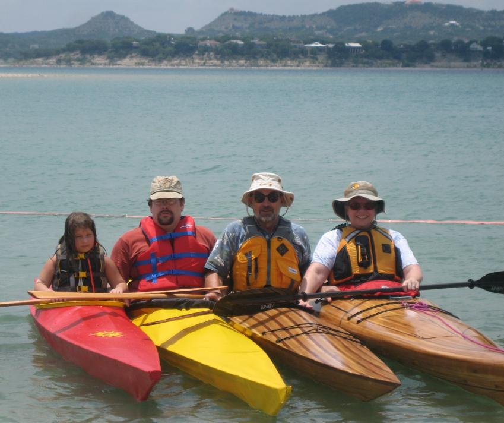

| Sea Pup,Sea Tour 17,Sea Ranger by Anton and Tony Olsen (US) | Menu Previous Page Next Page |
|

The Olsen family from Texas paddle newly completed kayaks. Anton built the red Sea Pup for his daughter Hannah, as well as his own yellow Sea Tour 17. Both are wood frame non folders skinned with PVC. Tony built his Sea Ranger as a woodstrip. He also strip built the Guillemot "Great Auk" paddled by his wife Elaine. Woodstrip Offsets ( 12 inch station spacing) are available in the manual for the Sea Ranger, but any of the boats in the manual can be built as strippers. Tony and Anton have recorded construction details in Tony's "Kayak Bytes" Blog. Use the {Back} key to return.
|
|